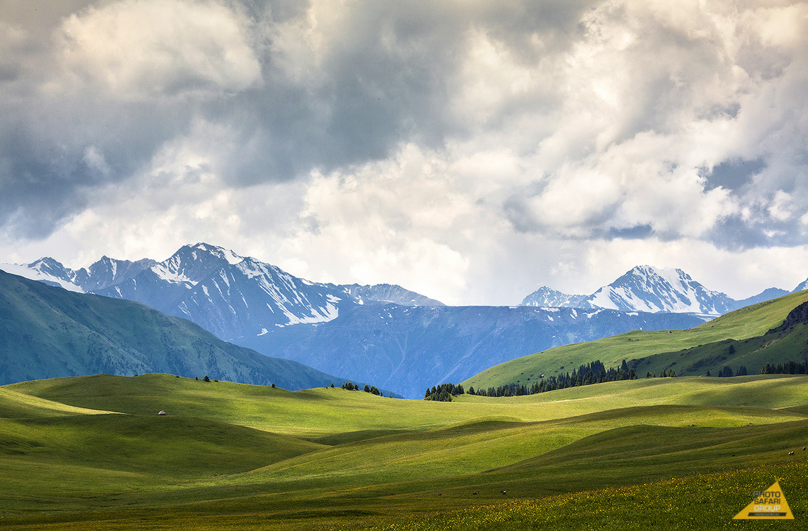
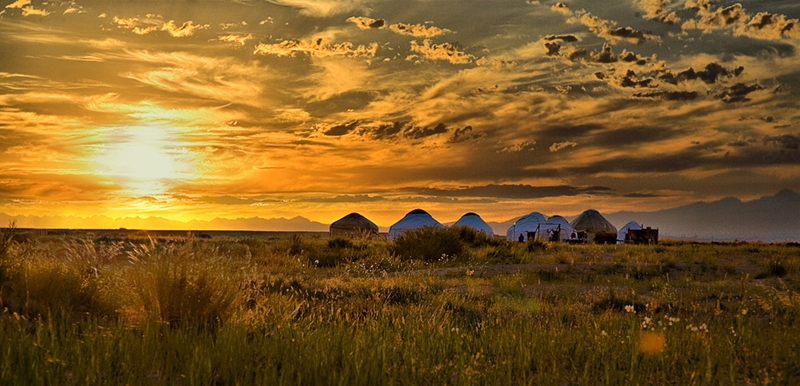
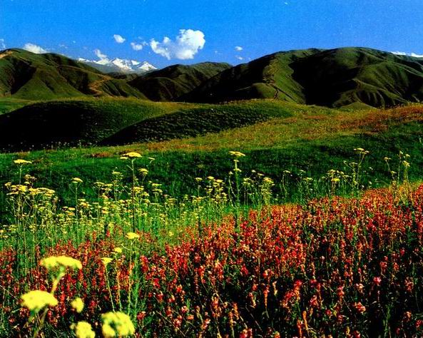
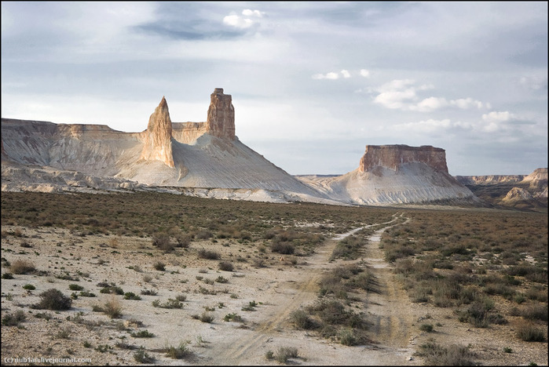
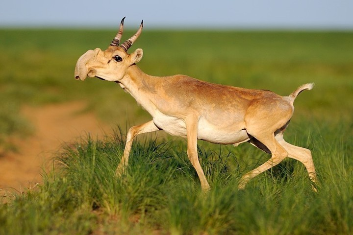
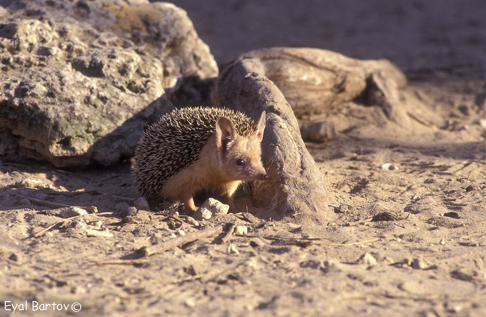
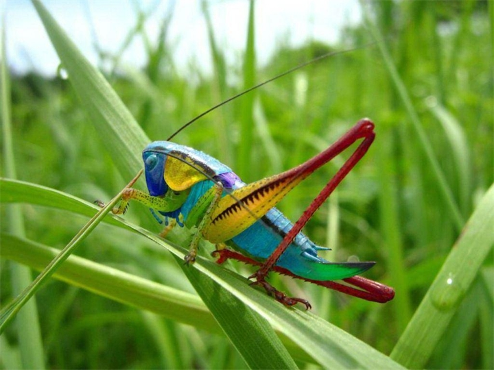
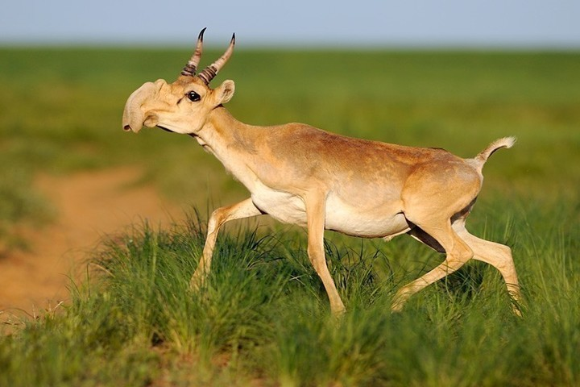
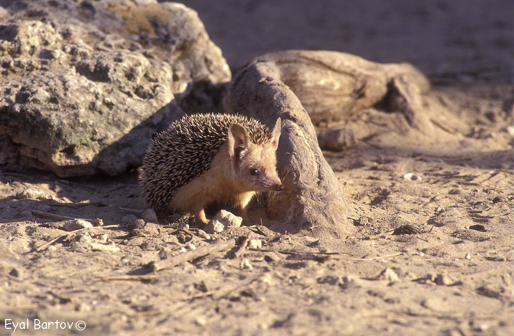

Природа Казахстана

В Казахстане можно наблюдать достаточно большое разнообразие представителей растений и животных.
В связи с большой протяженностью страны флора и фауна здесь многолика и варьируется в зависимости от зоны.
Здесь есть как засушливые пустыни, так и горные массивы, плодородные равнины и богатые рыбой реки.
Многие виды животных и птиц, ныне населяющие территорию республики, мигрировали сюда из Китая и Средиземноморья.
Биосферный комплекс Казахстана удивителен и разнообразен.
-
Растительный мир
Животный мир
Насекомые
Красная книга
Галерея

Растительный мир
На территории Казахстана произрастает примерно 6 тысяч различных высших растений. Однако если сравнивать эти цифры с соседней Россией или республиками Центральной Азии, то видовое разнообразие не так уж и велико. Тому есть ряд объективных причин: неблагоприятные условия на обширных территориях страны (почва, климат и т.д.) и достаточно молодой возраст историко-геологического развития данной местности.

Горные области покрыты пышной растительностью, которая меняется в соответствии с высотной поясностью. В этой зоне можно увидеть многих представителей средиземноморской и среднеазиатской флоры, например, миндаль, платан, клен, грецкий орех, косточковые и многие другие виды.Равнинные зоны, протянувшиеся с северной до южной границы более чем на 1500 км, усеяны степными и пустынными растениями. Здесь можно увидеть такие вилы, как саксаул, тополь разнолистный, лох и гребенщик.<
В зоне равнин Алтая произрастают заросли боярышника, шиповника и жимолости, а в предгорных равнинах Тянь-Шаня и в Жонгарском Алатау можно встретить лишь растения, характерные для пустынь, и некоторые виды эфемер и эфемероидов (маки, осока, тюльпаны, мятлик и др.) В низкогорье произрастает лес, состоящий из осин, берез, диких яблонь, боярышника и лоха.

Животный Мир
Фауна Казахстана насчитывает более 170 видов животных, 480 видов птиц, около 50 видов пресмыкающихся, около 100 видов рыб, а также большое количество земноводных и беспозвоночных.В степи обитает суслик, полевка, пеструшка, хомяки и пищухи, а также лисица, волк, сайгак, барсук, дрофа. Встречаются и птицы: журавли, синицы, черные воробьи и др.

В лесостепи здесь встречаются зайцы, горностаи, косули, лисицы и волки, а также некоторые виды птиц: куропатка, тетерев, дятел, рябчик, ворон, кобчик и сокол-балобан. В небольшом количестве обитают ящерицы и змеи.
В зоне речных долин и озер обитают пятнистые кошки, шакалы, волки, кабаны, косули, различные виды грызунов и птиц.

В пустыне проживают различные виды животных, которые сумели адаптироваться к здешним условиям. Здесь обитают волки, лисицы, песчаные зайцы, ежи, барсуки, сайгак, кулан, джейран, сурок, песчанка, суслики и мыши. Также здесь встречаются беркут, сорока, воробьи, различные змеи, ящерицы и степная черепаха.Горные ущелья населяют крупные хищные птицы, еловые леса – рыси, косули и маралы, а альпийские луга – снежные барсы, горные бараны, архары и разнообразные птицы.
В речных водах много рыбы, которая имеет промысловое значение. Аральское море насчитывает 20 видов рыбы, Каспийское – 50. Также здесь обитает каспийский тюлень.

По всей территории Казахстана встречается большое количество пауков и насекомых, в том числе опасных для людей (тарантулы, каракурты, скорпионы, клещи).
Насекомые
Одной из важных государственных задач является охрана флоры и фауны республики. На территории Казахстана встречаются редкие виды, занесенные в Красную книгу. В нее входит 300 видов растений, 40 животных, 56 птиц, некоторые пресмыкающиеся, земноводные и рыбы.

Животный Мир
Фауна Казахстана насчитывает более 170 видов животных, 480 видов птиц, около 50 видов пресмыкающихся, около 100 видов рыб, а также большое количество земноводных и беспозвоночных.В степи обитает суслик, полевка, пеструшка, хомяки и пищухи, а также лисица, волк, сайгак, барсук, дрофа. Встречаются и птицы: журавли, синицы, черные воробьи и др.

